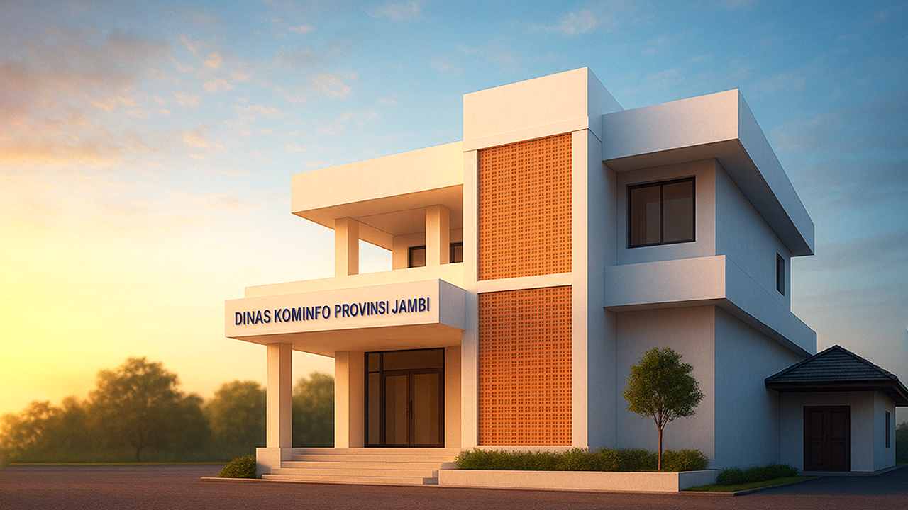

5+
Layanan unggulan yang telah tersedia untuk digunakan publik
20+
Aplikasi & Website yang telah diterbitkan untuk digunakan publik
Bidang Pekerjaan
Informasi Bidang pada Ruang Lingkup
Dinas Komunikasi dan Informatika
Dinas Komunikasi dan Informatika
Terdapat data tentang struktur, tugas dan fungsi bidang kerja
Sekretariat
Pengelolaan administrasi dan keuangan
Informasi Publik & Statistik
Data publik dan transparansi informasi
Layanan E-Goverment
Transformasi layanan digital pemerintah
Komunikasi Publik
Publikasi dan hubungan masyarakat
Persandian & TIK
Keamanan data dan infrastruktur digital
Berita & Informasi
Sekilas Informasi Terbaru dari
Dinas Komunikasi dan Informatika
Dinas Komunikasi dan Informatika
Ikuti terus perkembangan situasi dan keadaan terkini kami

Pemerintahan
Kepala Dinas Membuka Acara Kegiatan CSIRT Dalam Rangka Membangun...
3 Des 2024
|
Diskominfo Jambi

Pemerintahan
PJ Gubernur Jambi Melakukan Pembekalan Untuk Instansi Terkait...
3 Des 2024
|
Diskominfo Jambi
Pemerintahan
Cybersecurity Sebagai Pintu Pertama Penangkal Akses Kegiatan Hacking...
3 Des 2024
|
Diskominfo Jambi
Layanan Terpadu
Layanan Unggulan dari
Dinas Komunikasi dan Informatika
Dinas Komunikasi dan Informatika
Kami sediakan layanan pemerintahan inklusif dan terpadu
Galeri Kegiatan
Dokumentasi Kegiatan Terbaru
Dinas Komunikasi dan Informatika
Dinas Komunikasi dan Informatika
Galeri yang menampilkan aktivitas, agenda dan program kami


Informasi Publik
Informasi Publik dari
Dinas Komunikasi dan Informatika
Dinas Komunikasi dan Informatika
Berbagai data & dokumen publik kami berikan untuk mendukung keterbukaan dan kemudahan akses bagi masyarakat
LHKP
Rencana Kerja Pemerintah Daerah (RKPD) Jambi Tahun 2021
Dokumen penjabaran dari RPJMD (Rencana Pembangunan Jangka Menengah Daerah) Provinsi Jambi yang memuat rancangan kerangka ekonomi Daerah, prioritas pembangunan Daerah, serta rencana kerja dan pendanaan untuk jangka
Unduh
IKU
Rencana Kerja Pemerintah Daerah (RKPD) Jambi Tahun 2021
Dokumen penjabaran dari RPJMD (Rencana Pembangunan Jangka Menengah Daerah) Provinsi Jambi yang memuat rancangan kerangka ekonomi Daerah, prioritas pembangunan Daerah, serta rencana kerja dan pendanaan untuk jangka
Unduh
Renstra
Rencana Kerja Pemerintah Daerah (RKPD) Jambi Tahun 2021
Dokumen penjabaran dari RPJMD (Rencana Pembangunan Jangka Menengah Daerah) Provinsi Jambi yang memuat rancangan kerangka ekonomi Daerah, prioritas pembangunan Daerah, serta rencana kerja dan pendanaan untuk jangka
Unduh
Renja
Rencana Kerja Pemerintah Daerah (RKPD) Jambi Tahun 2021
Dokumen penjabaran dari RPJMD (Rencana Pembangunan Jangka Menengah Daerah) Provinsi Jambi yang memuat rancangan kerangka ekonomi Daerah, prioritas pembangunan Daerah, serta rencana kerja dan pendanaan untuk jangka
Unduh